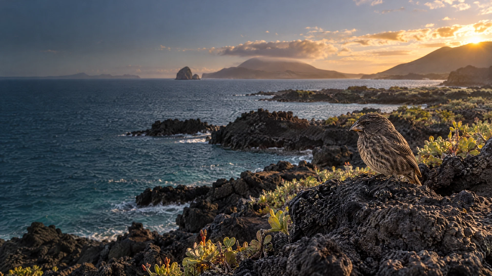

GUÍA DE CAMPO · SESIÓN 01
La vida
deja pistas.
Sigue las señales que llevaron a Darwin a explicar cómo cambian las poblaciones, generación tras generación.
Darwin · Selección natural

Observa. Compara.
Explica.
Lee las explicaciones y mira cómo conectan los conceptos.
Escucha cada módulo; puedes pausar y seguir a tu ritmo.
Comprueba tu razonamiento y al final intenta el examen.
LA RUTA · NUEVE MÓDULOS
Del cambio a la evidencia
Construye la explicación paso a paso. Cada audio viene con apuntes de lectura para que elijas cómo aprender.
OTRAS VOCES · 03:05
Un caso en movimiento
Un recurso breve para conectar la historia de Darwin con la variación entre pinzones.
Evolution by Natural Selection: Darwin’s Finches
FuseSchool repasa el viaje del Beagle, la variación de los picos y la selección natural en los pinzones.
Abrir en YouTubeEl video está en inglés. Puedes activar subtítulos en el reproductor. Se incluye solo porque su duración publicada es de 3:05 minutos.
ENTRENAMIENTO · NIVEL ADMISIÓN
Piensa como examinador.
Diez preguntas de aplicación para entrenar la lectura de datos, la inferencia y los distractores típicos.
Elige una opción y revisa las explicaciones. El puntaje se guarda en este dispositivo.
CIERRE DE SESIÓN · EVALUACIÓN FINAL
Veinte preguntas.
Una explicación.
Conecta variación, herencia, contexto y reproducción. Después de responder, revisa el porqué de cada opción.